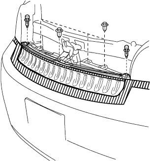

Capacita ASSY (with receiver) removed |
| 1. Refrincer HFC-134A (R134A) extract |
| 2. Radiator Grill W/Radiator Support Seal UPR |
Use the clip resover to remove the six clips.
|  |
Paste the protective tape around and on the radiator support seal UPR and the radiator support seal UPR.
Use a flathead screwdriver with a protective tape to remove the support seal behind the vehicle with the three claws in the figure.

Lift the radiator support seal UPR and remove the radiator grilled claws from the gaps.

Check that the claws are off and remove the radiator grill.
Remove the radiator support seal UPR.
| 3. Remove the front fenda liner LH |
Remove the two screws and remove the front (part) front (part).
 |
Rotate the clip 90 ° and remove it.
| 4. Remove the front fenda liner RH |
| 5. Remove the front vampa cover |
 |
Put a protective tape on the front fenda or bumper so that it does not hurt the vanper.
Take two clips using the clip remover.
Remove six screws at the bottom of the front vampa.
Remove two bolts at the bottom of the front vampa.
Demons the front vampkind part by hand, remove the tsus and remove the front vampo cover.
Cut the fog lamp connector.(Car with fog lamp)
Remove the front cover so that it does not hurt.
Remove the two screws and remove the front vampaside bracket LH and RH.
| 6. Connectors and clamps separation (horn) |
| 7. Cooler flavored discharge hose No.1 disconnection |
Remove the bolt and disconnect the No. 1 Coolalifurizalant Datic Horse Hose.
Remove the O -ring from the No. 1 cooler flirant day toy jersey hose.
| 8. Liquid tube SUB-ASSY A separation |
Remove the bolt and separate the cracked uve A.
Remove the O -ring from the kitsudochi Ubu A.
| 9. Condenser ASSY (with receiver) |
 |
Remove the two bolts and remove the condenser ASSY (Wise Recever).